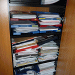

Tipps für einen leeren Schreibtisch-Teil 1
Ein leerer Schreibtisch ist der erste Schritt zu mehr Effizienz im Büro und auf dem Weg zum papierlosen Büro. Wer seinen Arbeitsplatz im Griff hat, kann besser im Team arbeiten. Aber wie anfangen? Hier unsere Tipps:
1. Fragen Sie sich bei jedem Stück Papier, ob Sie es wirklich noch brauchen.
Stellen Sie sich folgende drei Fragen: „Brauche ich das wirklich?“, „Wann werde ich es erledigen?“ und „Wo will ich es aufbewahren?“. Heben Sie Papier nur auf, wenn es hilft, Ihre Ziele zu erreichen. Wenn Sie keine Antwort auf diese Frage haben oder Ihre Antwort lautet: „Ich weiß nicht.“, dann gibt es nur eine Empfehlung: Weg damit!
2. Schaffen Sie einen zentralen Platz für Notizen/Ideen
Behalten Sie alle Ihre Notizen an einem einzigen Platz, egal ob in einem Notebook, einem Papier Organizer oder auf Ihrem Computer. Auch wenn Sie sich auf den Weg zu einem papierlosen Büro gemacht haben, spricht nichts dagegen ein schönes Notizbuch zu benutzen, das Sie gern in die Hand nehmen und das Ihnen das Gefühl vermittelt keine Information zu verlieren oder zu übersehen. Außerdem macht ein hochwertiges Buch, vielleicht noch in Ihrem Corporate Design einen professionelleren Eindruck als Zettelwirtschaft.
3. Gewöhnen Sie sich an, Ihre Post gleich zu sortieren
Legen Sie Aktionsordner- oder Körbe auf Ihrem Schreibtisch an, und unterteilen Sie sie wie z.B. folgt: To do, Lektüre, Ablage, und Heute. Achten Sie darauf, auf keinen Fall mehr als fünf Ablagekörbe anzulegen.
4. Überfüllen Sie Ihre Schränke nicht

- Überfüllter Büroschrank
Es gibt nichts Schlimmeres, als wenn man Papiere in Ordnern und Schränken ablegen muss, die bereits überfüllt sind. Behalten Sie die folgende Statistik im Kopf: „80 % von den Daten, die wir ablegen, schauen wir niemals wieder an!“
5. Entscheiden Sie über die Wichtigkeit der Papiere
Zuerst, bevor Sie irgendetwas ablegen, seien Sie sicher, dass es wirklich notwendig ist, diese Unterlagen aufzuheben. Erinnern Sie sich an die 80% Regel! Sie sollten nur Papier aufheben, die: a) Sie aus finanziellen, steuerlichen oder rechtlichen Gründen brauchen und b) Sie sehr wahrscheinlich in naher Zukunft brauchen.
Weitere Artikel

Digitale Visitenkarten
Auch wenn analoge Visitenkarten schön sein können, wenn Sie hochwertig sind, erweisen sie sich nicht mehr wirklich als praxistauglich. Rein digitale Visitenkarten mit QR Code, deren hinterlegte Informationen man schnell ändern …

App-Experten fragen: Der Digitalisierungsfalle entkommen
Ask the App Experts (AtAE) ist der Ausbruch aus der Digitalisierungsfalle. Mit AtAE bekommen Ihre Mitarbeitenden Antworten auf ihre persönlichen Software-Fragen bezüglich ihrer individuellen Probleme. „Software is eating the …